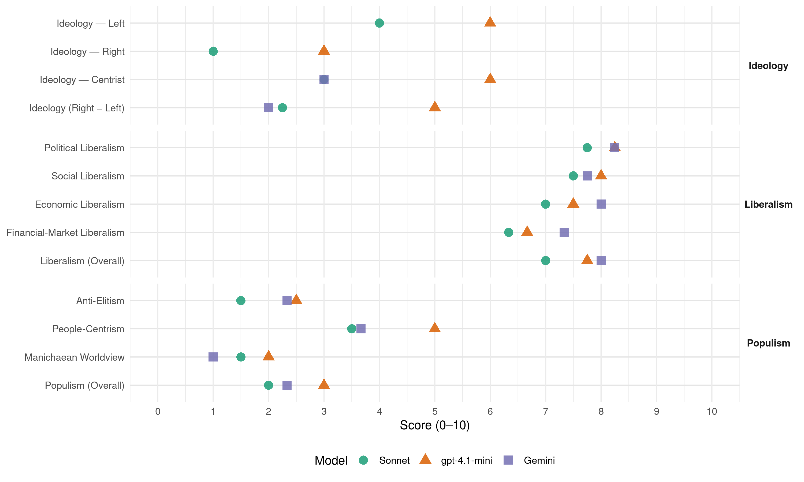

(Chile, 1993)
manifesto_id 155021_199312
Get full text: This site shows derived annotations and short verbatim quotes only. The full manifesto text is © Manifesto Project / WZB — obtain it via manifesto-project.wzb.eu using the manifesto_id above.
Headline scores
| Dimension | Sonnet | gpt-4.1-mini | Gemini |
|---|---|---|---|
| Populism (Overall) | 2.0 | 3.0 | 2.3 |
| Anti-Elitism | 1.5 | 2.5 | 2.3 |
| People-Centrism | 3.5 | 5.0 | 3.7 |
| Manichaean Worldview | 1.5 | 2.0 | 1.0 |
| Ideology (Right − Left) | 2.2 | 5.0 | 2.0 |
| Liberalism (Overall) | 7.0 | 7.8 | 8.0 |
| Political Liberalism | 7.8 | 8.2 | 8.2 |
| Social Liberalism | 7.5 | 8.0 | 7.8 |
| Economic Liberalism | 7.0 | 7.5 | 8.0 |
| Financial-Market Liberalism | 6.3 | 6.7 | 7.3 |
Evidence per dimension
Economic Liberalism
Gemini · score 8.0 · verified · chunk 1
“fomentar la competencia en los mercados”
con la evolución de la productividad y la inflación futura; fomentar la competencia en los mercados, facilitar el reentrenamiento
Gemini · score 8.0 · verified · chunk 2
“mercados competitivos y la apertura a la competencia”
un amplio acuerdo en torno al rol fundamental de la empresa privada, los mercados competitivos y la apertura a la competencia externa. Sin embargo
Gemini · score 8.0 · verified · chunk 3
“sistema multilateral de libre comercio”
nuestro objetivo fundamental es el perfeccionamiento del sistema multilateral de libre comercio, por lo cual seguiremos
Gemini · score 8.0 · verified · chunk 4
“un regionalismo abierto, que se integra para abrirse al mundo”
AMERICA LATINA 12) Chile debe asumir una actitud de estímulo a la democracia y de apoyo a las iniciativas de cooperación e integración. Nuestra propuesta es un regionalismo abierto, que se integra para abrirse al mundo y no para formar bloques.
gpt-4.1-mini · score 7.0 · verified · chunk 1
“Queremos desarrollar una economía al servicio de una sociedad basada en la sensibilidad, la creatividad, la solidaridad”
Queremos desarrollar una economía al servicio de una sociedad basada en la sensibilidad, la creatividad, la solidaridad, la austeridad, la libertad y la responsabilidad, y en la cual a nadie se le nieguen las oportunidades necesarias para que puede, con su propio esfuerzo, construirse una vida enriquecedora y plena.
gpt-4.1-mini · score 7.0 · verified · chunk 2
“promoveremos la competencia y desarrollaremos mercados transparentes y eficientes”
Promoveremos la competencia y desarrollaremos mercados transparentes y eficientes; modernizar la gestión de las empresas públicas y de CODELCO-Chile.
gpt-4.1-mini · score 8.0 · verified · chunk 3
“profundizar la apertura comercial y consolidar su carácter universalista”
Buscaremos profundizar la apertura comercial y consolidar su carácter universalista. La estructura de destino de las exportaciones chilenas muestra una equilibrada diversificación respecto de los grandes mercados y constituye un rasgo que cabe preservar como criterio estratégico.
gpt-4.1-mini · score 8.0 · verified · chunk 4
“mantendremos apoyando la Ronda Uruguay del GATT”
por lo cual seguiremos apoyando la Ronda Uruguay del GATT. Sin embargo, en ambos casos la sola negociación multilateral será insuficiente y deberemos complementarla aprovechando las oportunidades bilaterales o regionales que se abren en nuestro continente.
Sonnet · score 7.0 · verified · chunk 1
“promover la competencia y desarrollar mercados transparentes”
promover la competencia y desarrollar mercados transparentes y eficientes; modernizar la gestión de las empresas públicas y de CODELCO-Chile.
Sonnet · score 6.0 · mixed · chunk 2
“promover la competencia y desarrollar mercados transparentes y eficientes”
reforzar la inserción internacional y el fomento productivo; modernizar y fortalecer el sindicalismo y las relaciones laborales; superar la crisis de infraestructura y transporte; promover la competencia y desarrollar mercados transparentes y eficientes
Sonnet · score 7.0 · verified · chunk 3
“profundizar la apertura comercial y consolidar su carácter universalista”
Buscaremos profundizar la apertura comercial y consolidar su carácter universalista. La estructura de destino de las exportaciones chilenas muestra una equilibrada diversificación respecto de los grandes mercados
Sonnet · score 7.0 · verified · chunk 4
“regionalismo abierto, que se integra para abrirse al mundo”
Nuestra propuesta es un regionalismo abierto, que se integra para abrirse al mundo y no para formar bloques
Financial-Market Liberalism
Gemini · score 7.0 · verified · chunk 1
“tasas de interés reales positivas”
finanzas públicas; una política monetaria que genere tasas de interés reales positivas, consistentes con la productividad
Gemini · score 8.0 · verified · chunk 2
“perfeccionamiento y profundización del mercado de capitales”
vinculado al mundo. El perfeccionamiento y profundización del mercado de capitales y la existencia de un sistema bancario moderno
Gemini · score 7.0 · verified · chunk 3
“pequeñas empresas al crédito”
crearemos las condiciones que faciliten el acceso de las micro y pequeñas empresas al crédito. Estableceremos un sistema
gpt-4.1-mini · score 6.0 · verified · chunk 1
“profundizar el gran esfuerzo de inversión que ha caracterizado la gestión del primer Gobierno”
Una Alta Tasa de Ahorro e Inversión Crecer en forma sustentable, exportar, aumentar persistentemente la productividad, generar más y mejores empleos, erradicar la pobreza extrema y mejorar la calidad de vida exigen una gran acumulación de ahorro interno y de inversión. En los próximos años tendremos que profundizar el gran esfuerzo de inversión que ha caracterizado la gestión del primer Gobierno de la Concertación
gpt-4.1-mini · score 7.0 · verified · chunk 2
“perfeccionamiento y profundización del mercado de capitales y la existencia de un sistema bancario moderno y competitivo”
Seguir disminuyendo la inflación es también la base para afianzar la operación de un mercado de capitales moderno, profundo y crecientemente vinculado al mundo. El perfeccionamiento y profundización del mercado de capitales y la existencia de un sistema bancario moderno y competitivo son condiciones necesarias para garantizar una buena asignación de los recursos de ahorro y apoyar las tareas del crecimiento y la internacionalización de la economía.
gpt-4.1-mini · score 7.0 · verified · chunk 4
“Participar activamente en los organismos financieros internacionales (FMI, Banco Mundial y BID)”
Velar porque el proceso de reformas de la ONU (Consejo de Seguridad, ECOSOC, etc.) esté dirigido a fortalecer y perfeccionar los mecanismos de seguridad y desarrollo. Participar activamente en los organismos financieros internacionales (FMI, Banco Mundial y BID). Incorporar activamente a Chile en los organismos regionales de la Cuenca del Pacífico.
Sonnet · score 6.0 · verified · chunk 1
“política monetaria que genere tasas de interés reales positivas”
una política monetaria que genere tasas de interés reales positivas, consistentes con la productividad del capital en el largo plazo; y un tipo de cambio real que asegure una adecuada competitividad internacional.
Sonnet · score 6.0 · mixed · chunk 2
“perfeccionamiento y profundización del mercado de capitales”
El perfeccionamiento y profundización del mercado de capitales y la existencia de un sistema bancario moderno y competitivo son condiciones necesarias para garantizar una buena asignación de los recursos de ahorro
Sonnet · score 6.0 · verified · chunk 3
“Mayor Transparencia y más Eficiencia”
Mayor Transparencia y más Eficiencia Los trabajadores tienen derecho a contar con la mayor información respecto de materias previsionales. Fortaleceremos la transparencia del sistema, proporcionando información relevante y creíble sobre la rentabilidad de los fondos previsionales
Sonnet · score 7.0 · verified · chunk 4
“acceso a capital y tecnología”
Un acuerdo de Libre Comercio con Estados Unidos o la incorporación de Chile al NAFTA, significaría mejorar condiciones comerciales, aumentar el acceso a capital y tecnología
Political Liberalism
Gemini · score 9.0 · verified · chunk 1
“sólida democracia y una economía que crece”
Podemos ingresar al próximo siglo corno una sociedad moderna e integrada, con una sólida democracia y una economía que crece en beneficio de todos.
Gemini · score 8.0 · verified · chunk 2
“fortalecer nuestro sistema democrático”
modernización productiva con mayor integración social y para fortalecer nuestro sistema democrático. Para ello, impulsaremos
Gemini · score 8.0 · verified · chunk 3
“fortalecimiento de la democracia”
superar la pobreza, contribuye a la integración nacional y al fortalecimiento de la democracia y es un factor determinante
Gemini · score 8.0 · verified · chunk 4
“estímulo a la democracia y de apoyo a las iniciativas”
AMERICA LATINA 12) Chile debe asumir una actitud de estímulo a la democracia y de apoyo a las iniciativas de cooperación e integración. Nuestra propuesta es un regionalismo abierto
gpt-4.1-mini · score 8.0 · verified · chunk 1
“Las libertades públicas y los derechos fundamentales se respetan”
En Chile nuestras autoridades ejecutivas, legislativas y comunales se generan, en su mayoría, por la vía electoral. Las libertades públicas y los derechos fundamentales se respetan y la oposición posee un amplio espacio de representación y debate.
gpt-4.1-mini · score 8.0 · verified · chunk 2
“fortalecer la protección del derecho de sindicalización”
Estimamos fundamental fortalecer la capacidad de acción sindical. Para ello se requiere una política activa del Gobierno que: Asegure el efectivo cumplimiento del derecho de sindicalización, en particular erradicando las prácticas desleales que obstaculizan su formación funcionamiento desarrollo.
gpt-4.1-mini · score 8.0 · verified · chunk 3
“la participación de la mayor diversidad de actores sociales nacionales y locales”
Proseguiremos con políticas de prevención del consumo de drogas y de rehabilitación y tratamiento, orientadas principalmente a los sectores juveniles, con la participación de la mayor diversidad de actores sociales nacionales y locales. Enfrentaremos con vigor y decisión al narcotráfico.
gpt-4.1-mini · score 9.0 · verified · chunk 4
“la promoción regional y mundial de la paz, la democracia y el respeto de los derechos humanos”
Una de las bases de la política exterior de Chile ha sido la promoción regional y mundial de la paz, la democracia y el respeto de los derechos humanos. Para profundizar dicha política, el próximo Gobierno debe participar activamente en la elaboración de instrumentos internacionales y mecanismos de supervisión que perfeccionen el sistema internacional de protección; promoviendo el Plan de Acción aprobado por la Conferencia Mundial de Derechos Humanos, en especial, la creación de un Alto Comisionado de Naciones Unidas sobre Derechos Humanos, y lograr mayores garantías para la acción de las ONG defensoras de los DDHH.
Sonnet · score 8.0 · verified · chunk 1
“consolidar y profundizar la democracia”
Los resultados del primer Gobierno de la Concertación muestran que es posible consolidar y profundizar la democracia y, simultáneamente, crecer con equidad.
Sonnet · score 7.0 · verified · chunk 2
“plenamente democrático y capaz”
Un país moderno, plenamente democrático y capaz, de ofrecer a todos los chilenos acceso a verdaderas oportunidades de progreso y realización personal. Queremos una sociedad más justa
Sonnet · score 8.0 · verified · chunk 3
“la fuerza y la legitimidad del Estado de Derecho”
Declaramos nuestra irrenunciable voluntad y decisión de enfrentar con la fuerza y la legitimidad del Estado de Derecho toda actividad de estar naturaleza. Nos empeñaremos en reforzar su aislamiento político y social.
Sonnet · score 8.0 · verified · chunk 4
“apoyo a la democracia y de apoyo a las iniciativas”
Chile debe asumir una actitud de estímulo a la democracia y de apoyo a las iniciativas de cooperación e integración
Liberalism (Overall)
Gemini · score 8.0 · verified · chunk 1
“sólida democracia y una economía que crece”
Podemos ingresar al próximo siglo corno una sociedad moderna e integrada, con una sólida democracia y una economía que crece en beneficio de todos.
Gemini · score 8.0 · verified · chunk 2
“mercados competitivos y la apertura a la competencia”
un amplio acuerdo en torno al rol fundamental de la empresa privada, los mercados competitivos y la apertura a la competencia externa. Sin embargo
Gemini · score 8.0 · verified · chunk 3
“sistema multilateral de libre comercio”
nuestro objetivo fundamental es el perfeccionamiento del sistema multilateral de libre comercio, por lo cual seguiremos
Gemini · score 8.0 · verified · chunk 4
“un regionalismo abierto, que se integra para abrirse al mundo”
AMERICA LATINA 12) Chile debe asumir una actitud de estímulo a la democracia y de apoyo a las iniciativas de cooperación e integración. Nuestra propuesta es un regionalismo abierto, que se integra para abrirse al mundo y no para formar bloques.
gpt-4.1-mini · score 7.0 · verified · chunk 1
“Las libertades públicas y los derechos fundamentales se respetan”
En Chile nuestras autoridades ejecutivas, legislativas y comunales se generan, en su mayoría, por la vía electoral. Las libertades públicas y los derechos fundamentales se respetan y la oposición posee un amplio espacio de representación y debate.
gpt-4.1-mini · score 8.0 · verified · chunk 2
“fortalecer la protección del derecho de sindicalización”
Estimamos fundamental fortalecer la capacidad de acción sindical. Para ello se requiere una política activa del Gobierno que: Asegure el efectivo cumplimiento del derecho de sindicalización, en particular erradicando las prácticas desleales que obstaculizan su formación funcionamiento desarrollo.
gpt-4.1-mini · score 8.0 · verified · chunk 3
“profundizar la apertura comercial y consolidar su carácter universalista”
Buscaremos profundizar la apertura comercial y consolidar su carácter universalista. La estructura de destino de las exportaciones chilenas muestra una equilibrada diversificación respecto de los grandes mercados y constituye un rasgo que cabe preservar como criterio estratégico.
gpt-4.1-mini · score 8.0 · verified · chunk 4
“la promoción regional y mundial de la paz, la democracia y el respeto de los derechos humanos”
Una de las bases de la política exterior de Chile ha sido la promoción regional y mundial de la paz, la democracia y el respeto de los derechos humanos. Para profundizar dicha política, el próximo Gobierno debe participar activamente en la elaboración de instrumentos internacionales y mecanismos de supervisión que perfeccionen el sistema internacional de protección; promoviendo el Plan de Acción aprobado por la Conferencia Mundial de Derechos Humanos, en especial, la creación de un Alto Comisionado de Naciones Unidas sobre Derechos Humanos, y lograr mayores garantías para la acción de las ONG defensoras de los DDHH.
Sonnet · score 7.0 · verified · chunk 1
“crecer con equidad”
Los resultados del primer Gobierno de la Concertación muestran que es posible consolidar y profundizar la democracia y, simultáneamente, crecer con equidad.
Sonnet · score 7.0 · verified · chunk 2
“fortalecer la libre competencia”
una tarea fundamental del próximo Gobierno será fortalecer y defender la libre competencia. Desde el punto de vista del ciudadano, ello significa crear las condiciones que le permitan superar la indefensión
Sonnet · score 7.0 · verified · chunk 3
“profundizar la apertura comercial y consolidar su carácter universalista”
Buscaremos profundizar la apertura comercial y consolidar su carácter universalista. La estructura de destino de las exportaciones chilenas muestra una equilibrada diversificación respecto de los grandes mercados
Sonnet · score 7.0 · verified · chunk 4
“Libre Comercio con Estados Unidos o la incorporación”
Un acuerdo de Libre Comercio con Estados Unidos o la incorporación de Chile al NAFTA, significaría mejorar condiciones comerciales
Anti-Elitism
Gemini · score 2.0 · verified · chunk 1
“no de minorías para servir los intereses de unos pocos”
El nuestro será un Gobierno para Chile; no de minorías para servir los intereses de unos pocos. Trabajaremos en conjunto
Gemini · score 3.0 · verified · chunk 2
“errores del ideologizado proceso privatizador”
regulatorios que aquejan a estos sectores, originados en los errores del ideologizado proceso privatizador del régimen autoritario, donde la urgencia
Gemini · score 2.0 · verified · chunk 4
“ni tampoco los directorios y los cargos gerenciales en las empresas públicas pueden ser pajuelas para el pago de favores o compromisos políticos”
vocación por servir a la gente. Ni los puestos de responsabilidad en el Estado y la administración, ni tampoco los directorios y los cargos gerenciales en las empresas públicas pueden ser pajuelas para el pago de favores o compromisos políticos. El Plan de Acción
gpt-4.1-mini · score 3.0 · verified · chunk 1
“Rechaza la demagogia y el populismo”
La gente desea vivir en paz, de acuerdo a metas concretas y con ideales realizables. Rechaza la demagogia y el populismo. Representamos la solidaridad y el sentido del futuro; la vitalidad de la democracia y sus aspiraciones.
gpt-4.1-mini · score 2.0 · verified · chunk 2
“evitar toda tentación populista en materia de gasto público”
Para ello se requiere: evitar toda tentación populista en materia de gasto público, rememoraciones, subsidios y tributación; moderar el gasto privado en consumo y las reivindicaciones salariales, alineándolas con la evolución de la productividad y la inflación futura; fomentar la competencia en los mercados, facilitar el reentrenamiento y la reconversión laboral; y eliminar gradualmente, aquellas formas de indexación que no se justifiquen como seguro contra la inflación futura.
Sonnet · score 2.0 · verified · chunk 1
“no un gobierno de minorías para servir los intereses de unos pocos”
El nuestro será un Gobierno para Chile; no un gobierno de minorías para servir los intereses de unos pocos. Trabajaremos en conjunto
Sonnet · score 2.0 · verified · chunk 2
“errores del ideologizado proceso privatizador del régimen autoritario”
originados en los errores del ideologizado proceso privatizador del régimen autoritario, donde la urgencia por vender empresas públicas y cubrir déficit fiscales impidió adoptar suficientes resguardos
Sonnet · score 1.0 · verified · chunk 3
“revisando los subsidios estatales que benefician a sectores de mayores ingresos”
orientar los recursos públicos a quienes más lo necesitan, estableciendo estándares de cobertura en la atención primaria, invirtiendo en las regiones y localidades con mayores deficiencias y revisando los subsidios estatales que benefician a sectores de mayores ingresos
Sonnet · score 1.0 · verified · chunk 4
“rechazamos rotundamente la visión neoliberal ideologizada”
No somos nostálgicos del Estado intervencionista del pasado, pero rechazamos rotundamente la visión neoliberal ideologizada que ve en él un mal necesario
Ideology — Centrist
Gemini · score 3.0 · verified · chunk 4
“poner el Estado al servicio de los ciudadanos”
misión de cada repartición pública, como asimismo los resultados, productos y servicios que ellos requieren, midiendo y evaluando periódicamente el desempeño que se vaya logrando. Un Estilo de Gestión Orientado por los Resultados y el Servicio a los Ciudadanos 9) El desafío crucial que enfrenta hoy la gestión pública es transitar hacia un estilo generalizado de hacer las cosas, orientado por los resultados y las personas a que se debe servir, mucho más que poniendo el acento en las políticas, las reglas y los métodos. Ello supone un cambio en la cultura administrativa, que permitirá superar la lentitud de los trámites, el papeleo, las colas, los tiempos de espera, la mala calidad de los servicios y las prestaciones. 10) El esfuerzo de modernización de la Administración Pública debe hacerse preservando los principios esenciales de disciplina fiscal y probidad administrativa. Esos principios constituyen el más valioso patrimonio de nuestra Administración Pública y uno de los principales motivos de orgullo para Chile y sus servidores públicos. Mayor Eficiencia en la Gestión del Estado 11) Desde la perspectiva de la estrategia de desarrollo, es prioritario mejorar la eficiencia en la recaudación, administración y disposición de los fondos públicos y mejorar la gestión de las empresas públicas. El requerimiento de eficiencia es una exigencia de carácter técnico y además una apelación de orden ético. En los próximos años, el Estado enfrentará demandas crecientes en el marco de una situación presupuestaria relativamente restrictiva. Dilapidar fondos públicos significa atentar contra las oportunidades de los más pobres. Perfeccionaremos el sistema presupuestario, dotándolo de instrumentos que permitan evaluar los resultados de los programas de gobierno y de la gestión de los diversos servicios y reparticiones. Tecnologías y Principios Modernos de Gestión y Organización 12) Se incorporará en la gestión pública las tecnologías modernas de gestión y organización, aplicándolas con flexibilidad en los diversos organismos y reparticiones. Ello nos permitirá dar soluciones rápidas y de calidad a los problemas de la gente, evitando el burocratismo y el maltrato a las personas que acuden a las reparticiones públicas. 13) Los tiempos muestran, crecientemente, que los funcionarios, en proporción a su responsabilidad, requieren de flexibilidad y autonomía en materia administrativa, financiera y de administración de los recursos humanos, como condición de un desempeño moderno, orientado por resultados y por la atención al ciudadano. Al otorgar flexibilidad y autonomía a los funcionarios, generaremos un cambio efectivo en la administración pública y el Estado en general. 14) Transitaremos desde las formas tradicionales de control hacia sistemas de control y evaluación por resultados. Los funcionarios deben obrar dentro de los marcos legales y reglamentarios, pero el interés primordial tiene que recaer en la eficacia, eficiencia, economía y calidad de lo que se hace, lo cual significa también modernizar los sistemas de control de gasto. Sanción a La Ineficiencia y Premio al Buen Desempeño 15) Como contrapartida de la mayor flexibilidad y autonomía que otorgaremos al cumplimiento de la función pública, haremos efectiva la responsabilidad por los resultados y el desempeño, sancionando a los funcionarios deficientes y premiando a quienes lineen bien las cosas. El Liderazgo Organizacional: Aspecto Crucial del Nuevo Estilo de Gestión 16) Asignamos la máxima importancia a la calidad de las personas que ocupan las diversas posiciones de responsabilidad dentro del Estado, la Administración y las empresas públicas. Por ello, estableceremos un sistema de designación de cargos directivos que, conjuntamente con considerar el compromiso de los candidatos con las orientaciones de nuestro gobierno y sus políticas, contemple en un mismo pie la idoneidad técnica, la probidad, el dinamismo personal, la experiencia de gestión en el sector público o en el privado, y la vocación por servir a la gente. Ni los puestos de responsabilidad en el Estado y la administración, ni tampoco los directorios y los cargos gerenciales en las empresas públicas pueden ser pajuelas para el pago de favores o compromisos políticos. El Plan de Acción y el Compromiso de Desempeño de cada Repartición como Instrumentos de Modernización de la Gestión 17) Uno de los instrumentos claves para una mejor gestión y desempeño de cada repartición o empresa pública será su Plan de Acción. A quienes estén a cargo de una repartición o empresa pública se les exigirá, al comenzar su gestión, que definan un Plan de Acción que contemple las metas y objetivos que se perseguirán durante un período determinado. Esas metas y objetivos deberán expresarse de modo de poder evaluar su logro, tanto cuantitativa como cualitativamente. 18) El Plan de Acción será coherente con las soluciones de los problemas de los ciudadanos que son los usuarios o los tributarios de la acción de la repartición. Por ello, los directivos y sus colaboradores buscarán medidas imaginativas para incorporar la realidad y la participación de los usuarios 19) Las metas y objetivos del Plan de Acción se consagrarán en un Compromiso de Desempeño, en términos del cual se evaluará la gestión de los directivos. Evaluación y Control por los Ciudadanos 20) Si queremos un Estado al servicio de los ciudadanos, es de la máxima importancia que ellos dispongan de oportunidades electivas para evaluar y controlar el actuar de las reparticiones y empresas públicas. La mejor forma de controlar es el escrutinio público que puedan hacer los ciudadanos. 21) El control por la ciudadanía exige que ella esté informada respecto de las metas que la repartición o empresa persigue, de lo que se está haciendo para conseguirlas y de los grados de avance que se van logrando. Por ello, los que dirijan entidades públicas tendrán la obligación de dar una adecuada publicidad y difusión a los compromisos que han contraído con la ciudadanía, y de mantener permanentemente informado al público sobre la marcha de la institución en términos de los resultados que se vayan obteniendo. 22) Para que los ciudadanos ejerzan un control efectivo sobre las entidades públicas no basta con que estén informados. Necesitan canales para hacer saber su evaluación respecto del servicio. Estableceremos una instancia efectiva de apelación para los casos de presentaciones o quejas que no sean resueltas satisfactoriamente por las oficinas de reclamo de la respectiva repartición. En todos los locales donde concurre público existirán formularios, accesibles y simples, para la expresión de quejas y opiniones. Los resultados de estas evaluaciones se publicarán y se remitirán también a los niveles inmediatamente superiores para ser considerados en la evaluación de los funcionarios directivos. La Dignificación y Capacitación de los Funcionarios: El Sistema Nacional de Capacitación 23) Un mejor Estado, puesto al servicio de los ciudadanos, es una meta imposible de alcanzar sin elevar crecientemente la calidad de los trabajadores del sector público. Nuestro objetivo es, por tanto, incorporar y comprometer a los trabajadores del Estado en el desempeño de sus tareas, movilizando su motivación, reforzando la dignidad y la ética del funcionario, del valor del servicio público y de la importancia del Estado en una sociedad moderna, de manera que los servidores públicos vean en su labor diaria una opción real de desarrollo profesional y personal. 24) Para ello, crearemos y desarrollaremos un sistema nacional de capacitación del sector público, que será una pieza clave de la gestión de recursos humanos en este sector, posibilitando un tipo de funcionario caracterizado por su autonomía, responsabilidad, innovación y dinamismo. Los beneficios de este Sistema Nacional de Capacitación del Sector Público permitirán a los directivos impulsar al máximo la capacidad de trabajar en equipo, promover el desempeño eficaz y aliciente, y la motivación de dar plena satisfacción al usuario. Carrera Funcionaria y Remuneraciones 25) El sector público requiere de una política de remuneraciones coherente con los objetivos de una gestión moderna. Por ello, cambiaremos los sistemas de evaluación de modo de retribuir adecuadamente los logros y el desarrollo profesional, respetando las particularidades de cada repartición y actividad, poniendo en práctica sistemas de incentivos monetarios y no monetarios asociados a la evaluación y la excelencia. 26) Igualmente, avanzaremos hacia un concepto de carrera funcionaría más flexible y autónoma, ampliando el sistema de concursos abiertos no sólo para el reclutamiento al ingresar a la Administración, sino también para la promoción a los grados superiores, lo que permitirá definir la carrera para el conjunto del sector público o subsectores amplios dentro de él, según el caso, acabando con la compartimentalización hoy existente. 27) Tanto el vínculo entre desempeño e incentivos, como la vigencia de un concepto moderno de carrera, permitirán al Estado competir exitosamente por personal calificado, elevar la calidad de la atención a la ciudadanía, y cumplir con eficacia y eficiencia crecientes las tareas del Estado. Respaldo Institucional del Esfuerzo Modernizador 28) Para sustentar el esfuerzo modernizador es preciso un sistema de respaldo institucional que coordine a las instituciones del Estado hoy existentes, que tienen competencias relevantes en el ámbito de la modernización de la gestión; asesore al Presidente de la República en estas materias; apoye los procesos de modernización de la gestión y los recursos humanos, y vaya identificando las áreas o problemas que requieran intervenciones presidenciales de naturaleza legislativa, reglamentaria o de otro tipo. 29) Para cumplir esas funciones crearemos un Consejo Permanente de Asesoría al Presidente de la República en Gestión Pública, integrado por los ministros cuyas competencias atañen al esfuerzo de modernización, por el Contralor General de la República y por personas ajenas al Estado, con competencias reconocidas en la materia, que el Presidente invite como miembros de este Consejo. Ese Consejo dispondrá de una Secretaría Técnica que cumplirá funciones de apoyo al proceso de modernización en aquellas reparticiones donde el Ministro responsable de ellas lo solicite.
gpt-4.1-mini · score 7.0 · verified · chunk 1
“lo que importa son las personas, su dignidad y sus derechos”
En él, lo que importa son las personas, su dignidad y sus derechos, y cómo apoyar sus iniciativas. 11) En ese nuevo estilo, la cultura -con sus dinámicas inagotables de creatividad e innovación- debe manifestar toda la riqueza de nuestros afanes, aspiraciones e ideales.
gpt-4.1-mini · score 5.0 · verified · chunk 2
“una sociedad participativa, construida sobre la base de la cooperación de todos”
Queremos una sociedad más justa, que erradique la extrema pobreza y otorgue a todos los jóvenes iguales oportunidades de desarrollo profesional y personal. Una sociedad participativa, construida sobre la base de la cooperación de todos, donde los trabajadores accedan a empleos productivos y bien remunerados y puedan gozar líberamente.
Sonnet · score 2.0 · verified · chunk 1
“gobernar en favor de todos los chilenos”
Tenemos la voluntad y la decisión necesarias para gobernar en favor de todos los chilenos. Representamos a las fuerzas emergentes y más dinámicas de la sociedad
Sonnet · score 3.0 · verified · chunk 2
“Un país moderno, plenamente democrático”
Un país moderno, plenamente democrático y capaz, de ofrecer a todos los chilenos acceso a verdaderas oportunidades de progreso y realización personal.
Sonnet · score 3.0 · verified · chunk 3
“crecimiento con equidad”
La experiencia así acumulada constituye la mejor base para adecuar nuestro sistema de salud a las necesidades propias de un país que avanza decididamente por la senda del crecimiento con equidad.
Sonnet · score 4.0 · verified · chunk 4
“mantener el máximo de flexibilidad, mantener las opciones abiertas”
lo más importante, en las actuales condiciones del país y del comercio mundial, es mantener el máximo de flexibilidad, mantener las opciones abiertas y no abanderizarse ideológicamente
Ideology — Left
gpt-4.1-mini · score 6.0 · verified · chunk 1
“acortar la distancia entre quienes tienen en exceso y quienes tienen necesidades básicas insatisfechas”
Podemos asumir el compromiso de aumentar la riqueza y, a la vez, eliminar la pobreza; de acortar la distancia entre quienes tienen en exceso y quienes tienen necesidades básicas insatisfechas; de avanzar en democracia sin tener que recurrir a procedimientos autoritarios.
gpt-4.1-mini · score 6.0 · verified · chunk 2
“rechazamos su pretensión de radicar las tareas del crecimiento exclusivamente en el mercado”
Esta visión integrada de la política económica y social nos diferencia del neoliberalismo: rechazamos su pretensión de radicar las tareas del crecimiento exclusivamente en el mercado y la responsabilidad de lo social en el sector público; El mercado y las políticas públicas pueden y deben potenciarse mutuamente, encaminándose en una misma dirección de crecimiento con equidad, aprovechando las ventajas relativas de cada cual y generando ventajas de coordinación.
Sonnet · score 4.0 · verified · chunk 1
“acortar la distancia entre quienes tienen en exceso”
Nosotros podemos asumir el compromiso de aumentar la riqueza y, a la vez, eliminar la pobreza; de acortar la distancia entre quienes tienen en exceso y quienes tienen necesidades básicas insatisfechas
Sonnet · score 4.0 · verified · chunk 2
“rechazamos su pretensión de radicar las tareas del crecimiento exclusivamente en el mercado”
Esta visión integrada de la política económica y social nos diferencia del neoliberalismo: rechazamos su pretensión de radicar las tareas del crecimiento exclusivamente en el mercado y la responsabilidad de lo social en el sector público
Sonnet · score 5.0 · verified · chunk 3
“orientar los recursos públicos a quienes más lo necesitan”
Una tarea prioritaria para el próximo Gobierno será asegurar una mayor equidad en el acceso a la salud. Esto significa orientar los recursos públicos a quienes más lo necesitan, estableciendo estándares de cobertura en la atención primaria
Sonnet · score 3.0 · verified · chunk 4
“combate a la pobreza, la defensa de los derechos humanos”
Chile debe participar activamente en la articulación de nuevos consensos globales para el combate a la pobreza, la defensa de los derechos humanos
Ideology (Right − Left)
Gemini · score 2.0 · verified · chunk 4
“poner el Estado al servicio de los ciudadanos”
misión de cada repartición pública, como asimismo los resultados, productos y servicios que ellos requieren, midiendo y evaluando periódicamente el desempeño que se vaya logrando. Un Estilo de Gestión Orientado por los Resultados y el Servicio a los Ciudadanos 9) El desafío crucial que enfrenta hoy la gestión pública es transitar hacia un estilo generalizado de hacer las cosas, orientado por los resultados y las personas a que se debe servir, mucho más que poniendo el acento en las políticas, las reglas y los métodos. Ello supone un cambio en la cultura administrativa, que permitirá superar la lentitud de los trámites, el papeleo, las colas, los tiempos de espera, la mala calidad de los servicios y las prestaciones. 10) El esfuerzo de modernización de la Administración Pública debe hacerse preservando los principios esenciales de disciplina fiscal y probidad administrativa. Esos principios constituyen el más valioso patrimonio de nuestra Administración Pública y uno de los principales motivos de orgullo para Chile y sus servidores públicos. Mayor Eficiencia en la Gestión del Estado 11) Desde la perspectiva de la estrategia de desarrollo, es prioritario mejorar la eficiencia en la recaudación, administración y disposición de los fondos públicos y mejorar la gestión de las empresas públicas. El requerimiento de eficiencia es una exigencia de carácter técnico y además una apelación de orden ético. En los próximos años, el Estado enfrentará demandas crecientes en el marco de una situación presupuestaria relativamente restrictiva. Dilapidar fondos públicos significa atentar contra las oportunidades de los más pobres. Perfeccionaremos el sistema presupuestario, dotándolo de instrumentos que permitan evaluar los resultados de los programas de gobierno y de la gestión de los diversos servicios y reparticiones. Tecnologías y Principios Modernos de Gestión y Organización 12) Se incorporará en la gestión pública las tecnologías modernas de gestión y organización, aplicándolas con flexibilidad en los diversos organismos y reparticiones. Ello nos permitirá dar soluciones rápidas y de calidad a los problemas de la gente, evitando el burocratismo y el maltrato a las personas que acuden a las reparticiones públicas. 13) Los tiempos muestran, crecientemente, que los funcionarios, en proporción a su responsabilidad, requieren de flexibilidad y autonomía en materia administrativa, financiera y de administración de los recursos humanos, como condición de un desempeño moderno, orientado por resultados y por la atención al ciudadano. Al otorgar flexibilidad y autonomía a los funcionarios, generaremos un cambio efectivo en la administración pública y el Estado en general. 14) Transitaremos desde las formas tradicionales de control hacia sistemas de control y evaluación por resultados. Los funcionarios deben obrar dentro de los marcos legales y reglamentarios, pero el interés primordial tiene que recaer en la eficacia, eficiencia, economía y calidad de lo que se hace, lo cual significa también modernizar los sistemas de control de gasto. Sanción a La Ineficiencia y Premio al Buen Desempeño 15) Como contrapartida de la mayor flexibilidad y autonomía que otorgaremos al cumplimiento de la función pública, haremos efectiva la responsabilidad por los resultados y el desempeño, sancionando a los funcionarios deficientes y premiando a quienes lineen bien las cosas. El Liderazgo Organizacional: Aspecto Crucial del Nuevo Estilo de Gestión 16) Asignamos la máxima importancia a la calidad de las personas que ocupan las diversas posiciones de responsabilidad dentro del Estado, la Administración y las empresas públicas. Por ello, estableceremos un sistema de designación de cargos directivos que, conjuntamente con considerar el compromiso de los candidatos con las orientaciones de nuestro gobierno y sus políticas, contemple en un mismo pie la idoneidad técnica, la probidad, el dinamismo personal, la experiencia de gestión en el sector público o en el privado, y la vocación por servir a la gente. Ni los puestos de responsabilidad en el Estado and la administración, ni tampoco los directorios y los cargos gerenciales en las empresas públicas pueden ser pajuelas para el pago de favores o compromisos políticos. El Plan de Acción y el Compromiso de Desempeño de cada Repartición como Instrumentos de Modernización de la Gestión 17) Uno de los instrumentos claves para una mejor gestión y desempeño de cada repartición o empresa pública será su Plan de Acción. A quienes estén a cargo de una repartición o empresa pública se les exigirá, al comenzar su gestión, que definan un Plan de Acción que contemple las metas y objetivos que se perseguirán durante un período determinado. Esas metas y objetivos deberán expresarse de modo de poder evaluar su logro, tanto cuantitativa como cualitativamente. 18) El Plan de Acción será coherente con las soluciones de los problemas de los ciudadanos que son los usuarios o los tributarios de la acción de la repartición. Por ello, los directivos y sus colaboradores buscarán medidas imaginativas para incorporar la realidad y la participación de los usuarios 19) Las metas y objetivos del Plan de Acción se consagrarán en un Compromiso de Desempeño, en términos del cual se evaluará la gestión de los directivos. Evaluación y Control por los Ciudadanos 20) Si queremos un Estado al servicio de los ciudadanos, es de la máxima importancia que ellos dispongan de oportunidades electivas para evaluar y controlar el actuar de las reparticiones y empresas públicas. La mejor forma de controlar es el escrutinio público que puedan hacer los ciudadanos. 21) El control por la ciudadanía exige que ella esté informada respecto de las metas que la repartición o empresa persigue, de lo que se está haciendo para conseguirlas y de los grados de avance que se van logrando. Por ello, los que dirijan entidades públicas tendrán la obligación de dar una adecuada publicidad y difusión a los compromisos que han contraído con la ciudadanía, y de mantener permanentemente informado al público sobre la marcha de la institución en términos de los resultados que se vayan obteniendo. 22) Para que los ciudadanos ejerzan un control efectivo sobre las entidades públicas no basta con que estén informados. Necesitan canales para hacer saber su evaluación respecto del servicio. Estableceremos una instancia efectiva de apelación para los casos de presentaciones o quejas que no sean resueltas satisfactoriamente por las oficinas de reclamo de la respectiva repartición. En todos los locales donde concurre público existirán formularios, accesibles y simples, para la expresión de quejas y opiniones. Los resultados de estas evaluaciones se publicarán y se remitirán también a los niveles inmediatamente superiores para ser considerados en la evaluación de los funcionarios directivos. La Dignificación y Capacitación de los Funcionarios: El Sistema Nacional de Capacitación 23) Un mejor Estado, puesto al servicio de los ciudadanos, es una meta imposible de alcanzar sin elevar crecientemente la calidad de los trabajadores del sector público. Nuestro objetivo es, por tanto, incorporar y comprometer a los trabajadores del Estado en el desempeño de sus tareas, movilizando su motivación, reforzando la dignidad y la ética del funcionario, del valor del servicio público y de la importancia del Estado en una sociedad moderna, de manera que los servidores públicos vean en su labor diaria una opción real de desarrollo profesional y personal. 24) Para ello, crearemos y desarrollaremos un sistema nacional de capacitación del sector público, que será una pieza clave de la gestión de recursos humanos en este sector, posibilitando un tipo de funcionario caracterizado por su autonomía, responsabilidad, innovación y dinamismo. Los beneficios de este Sistema Nacional de Capacitación del Sector Público permitirán a los directivos impulsar al máximo la capacidad de trabajar en equipo, promover el desempeño eficaz y aliciente, y la motivación de dar plena satisfacción al usuario. Carrera Funcionaria y Remuneraciones 25) El sector público requiere de una política de remuneraciones coherente con los objetivos de una gestión moderna. Por ello, cambiaremos los sistemas de evaluación de modo de retribuir adecuadamente los logros y el desarrollo profesional, respetando las particularidades de cada repartición y actividad, poniendo en práctica sistemas de incentivos monetarios y no monetarios asociados a la evaluación y la excelencia. 26) Igualmente, avanzaremos hacia un concepto de carrera funcionaría más flexible y autónoma, ampliando el sistema de concursos abiertos no sólo para el reclutamiento al ingresar a la Administración, sino también para la promoción a los grados superiores, lo que permitirá definir la carrera para el conjunto del sector público o subsectores amplios dentro de él, según el caso, acabando con la compartimentalización hoy existente. 27) Tanto el vínculo entre desempeño e incentivos, como la vigencia de un concepto moderno de carrera, permitirán al Estado competir exitosamente por personal calificado, elevar la calidad de la atención a la ciudadanía, y cumplir con eficacia y eficiencia crecientes las tareas del Estado. Respaldo Institucional del Esfuerzo Modernizador 28) Para sustentar el esfuerzo modernizador es preciso un sistema de respaldo institucional que coordine a las instituciones del Estado hoy existentes, que tienen competencias relevantes en el ámbito de la modernización de la gestión; asesore al Presidente de la República en estas materias; apoye los procesos de modernización de la gestión y los recursos humanos, y vaya identificando las áreas o problemas que requieran intervenciones presidenciales de naturaleza legislativa, reglamentaria o de otro tipo. 29) Para cumplir esas funciones crearemos un Consejo Permanente de Asesoría al Presidente de la República en Gestión Pública, integrado por los ministros cuyas competencias atañen al esfuerzo de modernización, por el Contralor General de la República y por personas ajenas al Estado, con competencias reconocidas en la materia, que el Presidente invite como miembros de este Consejo. Ese Consejo dispondrá de una Secretaría Técnica que cumplirá funciones de apoyo al proceso de modernización en aquellas reparticiones donde el Ministro responsable de ellas lo solicite.
gpt-4.1-mini · score 5.0 · verified · chunk 1
“Podemos asumir el compromiso de aumentar la riqueza y, a la vez, eliminar la pobreza”
Podemos asumir el compromiso de aumentar la riqueza y, a la vez, eliminar la pobreza; de acortar la distancia entre quienes tienen en exceso y quienes tienen necesidades básicas insatisfechas; de avanzar en democracia sin tener que recurrir a procedimientos autoritarios.
gpt-4.1-mini · score 5.0 · verified · chunk 2
“rechazamos su pretensión de radicar las tareas del crecimiento exclusivamente en el mercado”
Esta visión integrada de la política económica y social nos diferencia del neoliberalismo: rechazamos su pretensión de radicar las tareas del crecimiento exclusivamente en el mercado y la responsabilidad de lo social en el sector público; El mercado y las políticas públicas pueden y deben potenciarse mutuamente, encaminándose en una misma dirección de crecimiento con equidad, aprovechando las ventajas relativas de cada cual y generando ventajas de coordinación.
Sonnet · score 2.0 · verified · chunk 1
“Rechaza la demagogia y el populismo”
La gente desea vivir en paz, de acuerdo a metas concretas y con ideales realizables. Rechaza la demagogia y el populismo.
Sonnet · score 2.0 · verified · chunk 2
“rechazamos su pretensión de radicar las tareas del crecimiento exclusivamente en el mercado”
Esta visión integrada de la política económica y social nos diferencia del neoliberalismo: rechazamos su pretensión de radicar las tareas del crecimiento exclusivamente en el mercado
Sonnet · score 3.0 · verified · chunk 3
“orientar los recursos públicos a quienes más lo necesitan”
Una tarea prioritaria para el próximo Gobierno será asegurar una mayor equidad en el acceso a la salud. Esto significa orientar los recursos públicos a quienes más lo necesitan
Sonnet · score 2.0 · verified · chunk 4
“no abanderizarse ideológicamente con ninguna opción”
mantener el máximo de flexibilidad, mantener las opciones abiertas y no abanderizarse ideológicamente con ninguna opción, sino optar, en cada circunstancia
Ideology — Right
gpt-4.1-mini · score 3.0 · verified · chunk 1
“asumen con fuerza su identidad y sus tradiciones”
Por el contrario, los países más exitosos son justamente aquéllos que forman una comunidad moral; que tienen un cuerpo común de valores que los inspira y mantiene unidos; que asumen con fuerza su identidad y sus tradiciones; que se renuevan y adaptan al cambio; que se ocupan de los más débiles y de la equidad,
gpt-4.1-mini · score 3.0 · verified · chunk 2
“promoveremos un amplio debate nacional para que el Parlamento adopte una decisión sobre las diversas posiciones existentes en relación al divorcio vincular del matrimonio”
Dentro del contexto de nuestra: opción por la familia, asumimos el compromiso que durante el próximo gobierno promoveremos un amplio debate nacional para que el Parlamento adopte una decisión sobre las diversas posiciones existentes en relación al divorcio vincular del matrimonio, tema que, en todo caso, corresponde a la conciencia de cada uno, que no debe enfrentarse mediante posiciones políticas partidistas y que debe situarse en la perspectiva de búsqueda del bien común.
Sonnet · score 1.0 · verified · chunk 1
“asumir con fuerza su identidad y sus tradiciones”
los países más exitosos son justamente aquéllos que forman una comunidad moral; que tienen un cuerpo común de valores que los inspira y mantiene unidos; que asumir con fuerza su identidad y sus tradiciones
Sonnet · score 1.0 · verified · chunk 4
“política nacional migratoria”
Debemos elaborar una política nacional migratoria que considere en especial: Realizar una revisión global de la Legislación Migratoria
Manichaean Worldview
Gemini · score 1.0 · verified · chunk 1
“Rechaza la demagogia y el populismo”
de acuerdo a metas concretas y con ideales realizables. Rechaza la demagogia y el populismo. Representamos la solidaridad
gpt-4.1-mini · score 2.0 · verified · chunk 1
“un pasado autoritario ni la nostalgia de un mundo que agotó sus ideales”
Representamos a las fuerzas emergentes y más dinámicas de la sociedad; no su pasado autoritario ni la nostalgia de un mundo que agotó sus ideales. 6) Son nuestros los valores y tradiciones que expresan la dignidad de las personas y su anhelo de vivir mejor.
Sonnet · score 2.0 · verified · chunk 1
“no su pasado autoritario ni la nostalgia”
Representamos a las fuerzas emergentes y más dinámicas de la sociedad; no su pasado autoritario ni la nostalgia de un mundo que agotó sus ideales.
Sonnet · score 2.0 · verified · chunk 2
“El ‘chorreo’ no funciona”
Pero el crecimiento económico no basta para eliminar la pobreza. El ‘chorreo’ no funciona. El compromiso del Estado y la sociedad con los más pobres es lo que hace la diferencia.
Sonnet · score 1.0 · verified · chunk 3
“El terrorismo constituye una grave amenaza para la democracia”
Enfrentar el Terrorismo El terrorismo constituye una grave amenaza para la democracia y la sociedad. Declaramos nuestra irrenunciable voluntad y decisión de enfrentar con la fuerza y la legitimidad del Estado de Derecho toda actividad de estar naturaleza.
Sonnet · score 1.0 · verified · chunk 4
“toda ineficacia o ineficiencia en la gestión gubernamental”
toda ineficacia o ineficiencia en la gestión gubernamental golpea principalmente a los más pobres, cuya causa es nuestra causa
People-Centrism
Gemini · score 3.0 · verified · chunk 1
“nuestra principal fuerza son las personas”
fábrica soluciones. Nada está más lejos de la realidad. Nuestra principal fuerza son las personas y las múltiples comunidades
Gemini · score 4.0 · verified · chunk 2
“bienestar de las mayorías”
fortalecer su aporte al crecimiento y al bienestar de las mayorías
Gemini · score 4.0 · verified · chunk 4
“poner el Estado al servicio de los ciudadanos”
misión de cada repartición pública, como asimismo los resultados, productos y servicios que ellos requieren, midiendo y evaluando periódicamente el desempeño que se vaya logrando. Un Estilo de Gestión Orientado por los Resultados y el Servicio a los Ciudadanos 9) El desafío crucial que enfrenta hoy la gestión pública es transitar hacia un estilo generalizado de hacer las cosas, orientado por los resultados y las personas a que se debe servir, mucho más que poniendo el acento en las políticas, las reglas y los métodos. Ello supone un cambio en la cultura administrativa, que permitirá superar la lentitud de los trámites, el papeleo, las colas, los tiempos de espera, la mala calidad de los servicios y las prestaciones. 10) El esfuerzo de modernización de la Administración Pública debe hacerse preservando los principios esenciales de disciplina fiscal y probidad administrativa. Esos principios constituyen el más valioso patrimonio de nuestra Administración Pública y uno de los principales motivos de orgullo para Chile y sus servidores públicos. Mayor Eficiencia en la Gestión del Estado 11) Desde la perspectiva de la estrategia de desarrollo, es prioritario mejorar la eficiencia en la recaudación, administración y disposición de los fondos públicos y mejorar la gestión de las empresas públicas. El requerimiento de eficiencia es una exigencia de carácter técnico y además una apelación de orden ético. En los próximos años, el Estado enfrentará demandas crecientes en el marco de una situación presupuestaria relativamente restrictiva. Dilapidar fondos públicos significa atentar contra las oportunidades de los más pobres. Perfeccionaremos el sistema presupuestario, dotándolo de instrumentos que permitan evaluar los resultados de los programas de gobierno y de la gestión de los diversos servicios y reparticiones. Tecnologías y Principios Modernos de Gestión y Organización 12) Se incorporará en la gestión pública las tecnologías modernas de gestión y organización, aplicándolas con flexibilidad en los diversos organismos y reparticiones. Ello nos permitirá dar soluciones rápidas y de calidad a los problemas de la gente, evitando el burocratismo y el maltrato a las personas que acuden a las reparticiones públicas. 13) Los tiempos muestran, crecientemente, que los funcionarios, en proporción a su responsabilidad, requieren de flexibilidad y autonomía en materia administrativa, financiera y de administración de los recursos humanos, como condición de un desempeño moderno, orientado por resultados y por la atención al ciudadano. Al otorgar flexibilidad y autonomía a los funcionarios, generaremos un cambio efectivo en la administración pública y el Estado en general. 14) Transitaremos desde las formas tradicionales de control hacia sistemas de control y evaluación por resultados. Los funcionarios deben obrar dentro de los marcos legales y reglamentarios, pero el interés primordial tiene que recaer en la eficacia, eficiencia, economía y calidad de lo que se hace, lo cual significa también modernizar los sistemas de control de gasto. Sanción a La Ineficiencia y Premio al Buen Desempeño 15) Como contrapartida de la mayor flexibilidad y autonomía que otorgaremos al cumplimiento de la función pública, haremos efectiva la responsabilidad por los resultados y el desempeño, sancionando a los funcionarios deficientes y premiando a quienes lineen bien las cosas. El Liderazgo Organizacional: Aspecto Crucial del Nuevo Estilo de Gestión 16) Asignamos la máxima importancia a la calidad de las personas que ocupan las diversas posiciones de responsabilidad dentro del Estado, la Administración y las empresas públicas. Por ello, estableceremos un sistema de designación de cargos directivos que, conjuntamente con considerar el compromiso de los candidatos con las orientaciones de nuestro gobierno y sus políticas, contemple en un mismo pie la idoneidad técnica, la probidad, el dinamismo personal, la experiencia de gestión en el sector público o en el privado, y la vocación por servir a la gente. Ni los puestos de responsabilidad en el Estado y la administración, ni tampoco los directorios y los cargos gerenciales en las empresas públicas pueden ser pajuelas para el pago de favores o compromisos políticos. El Plan de Acción y el Compromiso de Desempeño de cada Repartición como Instrumentos de Modernización de la Gestión 17) Uno de los instrumentos claves para una mejor gestión y desempeño de cada repartición o empresa pública será su Plan de Acción. A quienes estén a cargo de una repartición o empresa pública se les exigirá, al comenzar su gestión, que definan un Plan de Acción que contemple las metas y objetivos que se perseguirán durante un período determinado. Esas metas y objetivos deberán expresarse de modo de poder evaluar su logro, tanto cuantitativa como cualitativamente. 18) El Plan de Acción será coherente con las soluciones de los problemas de los ciudadanos que son los usuarios o los tributarios de la acción de la repartición. Por ello, los directivos y sus colaboradores buscarán medidas imaginativas para incorporar la realidad y la participación de los usuarios 19) Las metas y objetivos del Plan de Acción se consagrarán en un Compromiso de Desempeño, en términos del cual se evaluará la gestión de los directivos. Evaluación y Control por los Ciudadanos 20) Si queremos un Estado al servicio de los ciudadanos, es de la máxima importancia que ellos dispongan de oportunidades electivas para evaluar y controlar el actuar de las reparticiones y empresas públicas. La mejor forma de controlar es el escrutinio público que puedan hacer los ciudadanos. 21) El control por la ciudadanía exige que ella esté informada respecto de las metas que la repartición o empresa persigue, de lo que se está haciendo para conseguirlas y de los grados de avance que se van logrando. Por ello, los que dirijan entidades públicas tendrán la obligación de dar una adecuada publicidad y difusión a los compromisos que han contraído con la ciudadanía, y de mantener permanentemente informado al público sobre la marcha de la institución en términos de los resultados que se vayan obteniendo. 22) Para que los ciudadanos ejerzan un control efectivo sobre las entidades públicas no basta con que estén informados. Necesitan canales para hacer saber su evaluación respecto del servicio. Estableceremos una instancia efectiva de apelación para los casos de presentaciones o quejas que no sean resueltas satisfactoriamente por las oficinas de reclamo de la respectiva repartición. En todos los locales donde concurre público existirán formularios, accesibles y simples, para la expresión de quejas y opiniones. Los resultados de estas evaluaciones se publicarán y se remitirán también a los niveles inmediatamente superiores para ser considerados en la evaluación de los funcionarios directivos. La Dignificación y Capacitación de los Funcionarios: El Sistema Nacional de Capacitación 23) Un mejor Estado, puesto al servicio de los ciudadanos, es una meta imposible de alcanzar sin elevar crecientemente la calidad de los trabajadores del sector público. Nuestro objetivo es, por tanto, incorporar y comprometer a los trabajadores del Estado en el desempeño de sus tareas, movilizando su motivación, reforzando la dignidad y la ética del funcionario, del valor del servicio público y de la importancia del Estado en una sociedad moderna, de manera que los servidores públicos vean en su labor diaria una opción real de desarrollo profesional y personal. 24) Para ello, crearemos y desarrollaremos un sistema nacional de capacitación del sector público, que será una pieza clave de la gestión de recursos humanos en este sector, posibilitando un tipo de funcionario caracterizado por su autonomía, responsibility, innovación y dinamismo. Los beneficios de este Sistema Nacional de Capacitación del Sector Público permitirán a los directivos impulsar al máximo la capacidad de trabajar en equipo, promover el desempeño eficaz y aliciente, y la motivación de dar plena satisfacción al usuario. Carrera Funcionaria y Remuneraciones 25) El sector público requiere de una política de remuneraciones coherente con los objetivos de una gestión moderna. Por ello, cambiaremos los sistemas de evaluación de modo de retribuir adecuadamente los logros y el desarrollo profesional, respetando las particularidades de cada repartición y actividad, poniendo en práctica sistemas de incentivos monetarios y no monetarios asociados a la evaluación y la excelencia. 26) Igualmente, avanzaremos hacia un concepto de carrera funcionaría más flexible y autónoma, ampliando el sistema de concursos abiertos no sólo para el reclutamiento al ingresar a la Administración, sino también para la promoción a los grados superiores, lo que permitirá definir la carrera para el conjunto del sector público o subsectores amplios dentro de él, según el caso, acabando con la compartimentalización hoy existente. 27) Tanto el vínculo entre desempeño e incentivos, como la vigencia de un concepto moderno de carrera, permitirán al Estado competir exitosamente por personal calificado, elevar la calidad de la atención a la ciudadanía, y cumplir con eficacia y eficiencia crecientes las tareas del Estado. Respaldo Institucional del Esfuerzo Modernizador 28) Para sustentar el esfuerzo modernizador es preciso un sistema de respaldo institucional que coordine a las instituciones del Estado hoy existentes, que tienen competencias relevantes en el ámbito de la modernización de la gestión; asesore al Presidente de la República en estas materias; apoye los procesos de modernización de la gestión y los recursos humanos, y vaya identificando las áreas o problemas que requieran intervenciones presidenciales de naturaleza legislativa, reglamentaria o de otro tipo. 29) Para cumplir esas funciones crearemos un Consejo Permanente de Asesoría al Presidente de la República en Gestión Pública, integrado por los ministros cuyas competencias atañen al esfuerzo de modernización, por el Contralor General de la República y por personas ajenas al Estado, con competencias reconocidas en la materia, que el Presidente invite como miembros de este Consejo. Ese Consejo dispondrá de una Secretaría Técnica que cumplirá funciones de apoyo al proceso de modernización en aquellas reparticiones donde el Ministro responsable de ellas lo solicite.
gpt-4.1-mini · score 7.0 · verified · chunk 1
“lo que importa son las personas, su dignidad y sus derechos”
En él, lo que importa son las personas, su dignidad y sus derechos, y cómo apoyar sus iniciativas. 11) En ese nuevo estilo, la cultura -con sus dinámicas inagotables de creatividad e innovación- debe manifestar toda la riqueza de nuestros afanes, aspiraciones e ideales.
gpt-4.1-mini · score 3.0 · verified · chunk 2
“una sociedad participativa, construida sobre la base de la cooperación de todos”
Queremos una sociedad más justa, que erradique la extrema pobreza y otorgue a todos los jóvenes iguales oportunidades de desarrollo profesional y personal. Una sociedad participativa, construida sobre la base de la cooperación de todos, donde los trabajadores accedan a empleos productivos y bien remunerados y puedan gozar líberamente.
Sonnet · score 4.0 · verified · chunk 1
“Convocamos al país a ser parte de los nuevos tiempos”
PROTAGONISTAS DE LOS NUEVOS TIEMPOS 5) Convocamos al país a ser parte de los nuevos tiempos. Tenemos la voluntad y la decisión necesarias para gobernar en favor de todos los chilenos.
Sonnet · score 3.0 · verified · chunk 2
“ningún chileno viva en condición de pobreza extrema”
Queremos que al iniciarse el próximo siglo ningún chileno viva en condición de pobreza extrema. Por la eficaz y profunda acción desplegada durante el Gobierno del Presidente Aylwin
Sonnet · score 4.0 · verified · chunk 3
“Los chilenos exigen una garantía efectiva del derecho a la salud”
Estos chilenos hoy exigen una contribución decidida de la salud al mejoramiento de su calidad de vida. Los chilenos exigen una garantía efectiva del derecho a la salud, sin distinción de sexo, edad o condición social
Sonnet · score 3.0 · verified · chunk 4
“pondrá el Estado al servicio de los ciudadanos”
El próximo Gobierno pondrá el Estado al servicio de los ciudadanos, buscando que sus acciones respondan a sus necesidades
Populism (Overall)
Gemini · score 2.0 · verified · chunk 1
“Rechaza la demagogia y el populismo”
de acuerdo a metas concretas y con ideales realizables. Rechaza la demagogia y el populismo. Representamos la solidaridad
Gemini · score 3.0 · verified · chunk 2
“evitar toda tentación populista”
ganando terreno contra la inflación. Para ello se requiere: evitar toda tentación populista en materia de gasto público
Gemini · score 2.0 · verified · chunk 4
“poner el Estado al servicio de los ciudadanos”
misión de cada repartición pública, como asimismo los resultados, productos y servicios que ellos requieren, midiendo y evaluando periódicamente el desempeño que se vaya logrando. Un Estilo de Gestión Orientado por los Resultados y el Servicio a los Ciudadanos 9) El desafío crucial que enfrenta hoy la gestión pública es transitar hacia un estilo generalizado de hacer las cosas, orientado por los resultados y las personas a que se debe servir, mucho más que poniendo el acento en las políticas, las reglas y los métodos. Ello supone un cambio en la cultura administrativa, que permitirá superar la lentitud de los trámites, el papeleo, las colas, los tiempos de espera, la mala calidad de los servicios y las prestaciones. 10) El esfuerzo de modernización de la Administración Pública debe hacerse preservando los principios esenciales de disciplina fiscal y probidad administrativa. Esos principios constituyen el más valioso patrimonio de nuestra Administración Pública y uno de los principales motivos de orgullo para Chile y sus servidores públicos. Mayor Eficiencia en la Gestión del Estado 11) Desde la perspectiva de la estrategia de desarrollo, es prioritario mejorar la eficiencia en la recaudación, administración y disposición de los fondos públicos y mejorar la gestión de las empresas públicas. El requerimiento de eficiencia es una exigencia de carácter técnico y además una apelación de orden ético. En los próximos años, el Estado enfrentará demandas crecientes en el marco de una situación presupuestaria relativamente restrictiva. Dilapidar fondos públicos significa atentar contra las oportunidades de los más pobres. Perfeccionaremos el sistema presupuestario, dotándolo de instrumentos que permitan evaluar los resultados de los programas de gobierno y de la gestión de los diversos servicios y reparticiones. Tecnologías y Principios Modernos de Gestión y Organización 12) Se incorporará en la gestión pública las tecnologías modernas de gestión y organización, aplicándolas con flexibilidad en los diversos organismos y reparticiones. Ello nos permitirá dar soluciones rápidas y de calidad a los problemas de la gente, evitando el burocratismo y el maltrato a las personas que acuden a las reparticiones públicas. 13) Los tiempos muestran, crecientemente, que los funcionarios, en proporción a su responsabilidad, requieren de flexibilidad y autonomía en materia administrativa, financiera y de administración de los recursos humanos, como condición de un desempeño moderno, orientado por resultados y por la atención al ciudadano. Al otorgar flexibilidad y autonomía a los funcionarios, generaremos un cambio efectivo en la administración pública y el Estado en general. 14) Transitaremos desde las formas tradicionales de control hacia sistemas de control y evaluación por resultados. Los funcionarios deben obrar dentro de los marcos legales y reglamentarios, pero el interés primordial tiene que recaer en la eficacia, eficiencia, economía y calidad de lo que se hace, lo cual significa también modernizar los sistemas de control de gasto. Sanción a La Ineficiencia y Premio al Buen Desempeño 15) Como contrapartida de la mayor flexibilidad y autonomía que otorgaremos al cumplimiento de la función pública, haremos efectiva la responsabilidad por los resultados y el desempeño, sancionando a los funcionarios deficientes y premiando a quienes lineen bien las cosas. El Liderazgo Organizacional: Aspecto Crucial del Nuevo Estilo de Gestión 16) Asignamos la máxima importancia a la calidad de las personas que ocupan las diversas posiciones de responsabilidad dentro del Estado, la Administración y las empresas públicas. Por ello, estableceremos un sistema de designación de cargos directivos que, conjuntamente con considerar el compromiso de los candidatos con las orientaciones de nuestro gobierno y sus políticas, contemple en un mismo pie la idoneidad técnica, la probidad, el dinamismo personal, la experiencia de gestión en el sector público o en el privado, y la vocación por servir a la gente. Ni los puestos de responsabilidad en el Estado y la administración, ni tampoco los directorios y los cargos gerenciales en las empresas públicas pueden ser pajuelas para el pago de favores o compromisos políticos. El Plan de Acción y el Compromiso de Desempeño de cada Repartición como Instrumentos de Modernización de la Gestión 17) Uno de los instrumentos claves para una mejor gestión y desempeño de cada repartición o empresa pública será su Plan de Acción. A quienes estén a cargo de una repartición o empresa pública se les exigirá, al comenzar su gestión, que definan un Plan de Acción que contemple las metas y objetivos que se perseguirán durante un período determinado. Esas metas y objetivos deberán expresarse de modo de poder evaluar su logro, tanto cuantitativa como cualitativamente. 18) El Plan de Acción será coherente con las soluciones de los problemas de los ciudadanos que son los usuarios o los tributarios de la acción de la repartición. Por ello, los directivos y sus colaboradores buscarán medidas imaginativas para incorporar la realidad y la participación de los usuarios 19) Las metas y objetivos del Plan de Acción se consagrarán en un Compromiso de Desempeño, en términos del cual se evaluará la gestión de los directivos. Evaluación y Control por los Ciudadanos 20) Si queremos un Estado al servicio de los ciudadanos, es de la máxima importancia que ellos dispongan de oportunidades electivas para evaluar y controlar el actuar de las reparticiones y empresas públicas. La mejor forma de controlar es el escrutinio público que puedan hacer los ciudadanos. 21) El control por la ciudadanía exige que ella esté informada respecto de las metas que la repartición o empresa persigue, de lo que se está haciendo para conseguirlas y de los grados de avance que se van logrando. Por ello, los que dirijan entidades públicas tendrán la obligación de dar una adecuada publicidad y difusión a los compromisos que han contraído con la ciudadanía, y de mantener permanentemente informado al público sobre la marcha de la institución en términos de los resultados que se vayan obteniendo. 22) Para que los ciudadanos ejerzan un control efectivo sobre las entidades públicas no basta con que estén informados. Necesitan canales para hacer saber su evaluación respecto del servicio. Estableceremos una instancia efectiva de apelación para los casos de presentaciones o quejas que no sean resueltas satisfactoriamente por las oficinas de reclamo de la respectiva repartición. En todos los locales donde concurre público existirán formularios, accesibles y simples, para la expresión de quejas y opiniones. Los resultados de estas evaluaciones se publicarán y se remitirán también a los niveles inmediatamente superiores para ser considerados en la evaluación de los funcionarios directivos. La Dignificación y Capacitación de los Funcionarios: El Sistema Nacional de Capacitación 23) Un mejor Estado, puesto al servicio de los ciudadanos, es una meta imposible de alcanzar sin elevar crecientemente la calidad de los trabajadores del sector público. Nuestro objetivo es, por tanto, incorporar y comprometer a los trabajadores del Estado en el desempeño de sus tareas, movilizando su motivación, reforzando la dignidad y la ética del funcionario, del valor del servicio público y de la importancia del Estado en una sociedad moderna, de manera que los servidores públicos vean en su labor diaria una opción real de desarrollo profesional y personal. 24) Para ello, crearemos y desarrollaremos un sistema nacional de capacitación del sector público, que será una pieza clave de la gestión de recursos humanos en este sector, posibilitando un tipo de funcionario caracterizado por su autonomía, responsabilidad, innovación y dinamismo. Los beneficios de este Sistema Nacional de Capacitación del Sector Público permitirán a los directivos impulsar al máximo la capacidad de trabajar en equipo, promover el desempeño eficaz y aliciente, y la motivación de dar plena satisfacción al usuario. Carrera Funcionaria y Remuneraciones 25) El sector público requiere de una política de remuneraciones coherente con los objetivos de una gestión moderna. Por ello, cambiaremos los sistemas de evaluación de modo de retribuir adecuadamente los logros y el desarrollo profesional, respetando las particularidades de cada repartición y actividad, poniendo en práctica sistemas de incentivos monetarios y no monetarios asociados a la evaluación y la excelencia. 26) Igualmente, avanzaremos hacia un concepto de carrera funcionaría más flexible y autónoma, ampliando el sistema de concursos abiertos no sólo para el reclutamiento al ingresar a la Administración, sino también para la promoción a los grados superiores, lo que permitirá definir la carrera para el conjunto del sector público o subsectores amplios dentro de él, según el caso, acabando con la compartimentalización hoy existente. 27) Tanto el vínculo entre desempeño e incentivos, como la vigencia de un concepto moderno de carrera, permitirán al Estado competir exitosamente por personal calificado, elevar la calidad de la atención a la ciudadanía, y cumplir con eficacia y eficiencia crecientes las tareas del Estado. Respaldo Institucional del Esfuerzo Modernizador 28) Para sustentar el esfuerzo modernizador es preciso un sistema de respaldo institucional que coordine a las instituciones del Estado hoy existentes, que tienen competencias relevantes en el ámbito de la modernización de la gestión; asesore al Presidente de la República en estas materias; apoye los procesos de modernización de la gestión y los recursos humanos, y vaya identificando las áreas o problemas que requieran intervenciones presidenciales de naturaleza legislativa, reglamentaria o de otro tipo. 29) Para cumplir esas funciones crearemos un Consejo Permanente de Asesoría al Presidente de la República en Gestión Pública, integrado por los ministros cuyas competencias atañen al esfuerzo de modernización, por el Contralor General de la República y por personas ajenas al Estado, con competencias reconocidas en la materia, que el Presidente invite como miembros de este Consejo. Ese Consejo dispondrá de una Secretaría Técnica que cumplirá funciones de apoyo al proceso de modernización en aquellas reparticiones donde el Ministro responsable de ellas lo solicite.
gpt-4.1-mini · score 4.0 · verified · chunk 1
“Rechaza la demagogia y el populismo”
La gente desea vivir en paz, de acuerdo a metas concretas y con ideales realizables. Rechaza la demagogia y el populismo. Representamos la solidaridad y el sentido del futuro; la vitalidad de la democracia y sus aspiraciones.
gpt-4.1-mini · score 2.0 · verified · chunk 2
“evitar toda tentación populista en materia de gasto público”
Para ello se requiere: evitar toda tentación populista en materia de gasto público, rememoraciones, subsidios y tributación; moderar el gasto privado en consumo y las reivindicaciones salariales, alineándolas con la evolución de la productividad y la inflación futura; fomentar la competencia en los mercados, facilitar el reentrenamiento y la reconversión laboral; y eliminar gradualmente, aquellas formas de indexación que no se justifiquen como seguro contra la inflación futura.
Sonnet · score 2.0 · verified · chunk 1
“Rechaza la demagogia y el populismo”
La gente desea vivir en paz, de acuerdo a metas concretas y con ideales realizables. Rechaza la demagogia y el populismo. Representamos la solidaridad y el sentido del futuro
Sonnet · score 2.0 · verified · chunk 2
“evitar toda tentación populista en materia”
Para ello se requiere: evitar toda tentación populista en materia de gasto público, rememoraciones, subsidios y tributación; moderar el gasto privado en consumo
Sonnet · score 2.0 · verified · chunk 3
“Los chilenos exigen una garantía efectiva del derecho a la salud”
Estos chilenos hoy exigen una contribución decidida de la salud al mejoramiento de su calidad de vida. Los chilenos exigen una garantía efectiva del derecho a la salud, sin distinción de sexo, edad o condición social
Sonnet · score 2.0 · verified · chunk 4
“rechazamos rotundamente la visión neoliberal ideologizada”
No somos nostálgicos del Estado intervencionista del pasado, pero rechazamos rotundamente la visión neoliberal ideologizada que ve en él un mal necesario
Social Liberalism